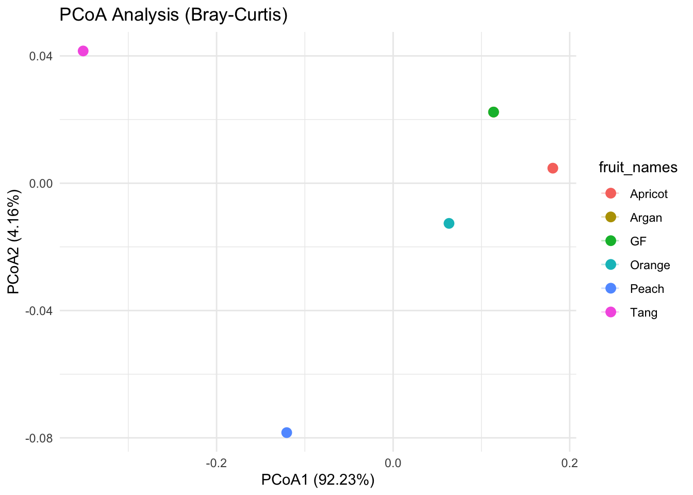

Principal Co-ordinate Analysis (PCoA)
Principal Coordinates Analysis (PCoA), also known as classical multidimensional scaling (MDS), although this is sometimes challenged - is another common ordination technique.
What is PCoA?
- PCoA is used to analyse or visualise relationships between samples, based on their pairwise distances or dissimilarities.
- It reduces dimensionality, while preserving as much of the original structure as possible.
- Unlike PCA, PCoA can be applied to non-Euclidean distances, such as Bray–Curtis or Jaccard. This means it is more flexible, and it does not have to satisfy any rules.
- The general goal of PCoA is to represent possible non-Eucledian distances with a set of Eucledian co-ordinates.
- Like most ordination methods, PCoA will project the pairwise distance samples into a co-ordinate system, where axes that best preserve the original distances are selected. Closely related samples cluster together, and dissimilar samples will spread further apart.
- The general principle is that this reflects is that n sample units can be illustrated in only one dimension!
- This is different to NMDS because, NMDs uses rank order distance.
How do we PCoA?
Let’s be a bit simple and go through R.
| Fruit | Klebsiella | Acinetobacter | Pantoea | Pseudoxanthomonas | Serratia | Stenotrophomonas | Delftia | Burkholderia | Sphingomonas | Bacillus | Sphingobacterium | Mycoplasma |
|---|---|---|---|---|---|---|---|---|---|---|---|---|
| Apricot | 80% | 10% | 0% | 0% | 0% | 0% | 0% | 0% | 0% | 0% | 0% | 5% |
| Argan | 75% | 10% | 5% | 5% | 0% | 0% | 0% | 0% | 0% | 0% | 5% | 5% |
| GF | 75% | 10% | 5% | 5% | 0% | 0% | 0% | 0% | 0% | 0% | 5% | 5% |
| Orange | 70% | 15% | 5% | 5% | 5% | 0% | 0% | 0% | 0% | 0% | 0% | 5% |
| Peach | 60% | 10% | 10% | 10% | 5% | 5% | 0% | 0% | 5% | 5% | 0% | 0% |
| Tang | 40% | 10% | 20% | 20% | 10% | 5% | 0% | 5% | 10% | 0% | 0% | 0% |
As demonstrated briefly above, if we are using R to calculate the Bray-Curtis dissimilarity values, we first want to put our data into a dataframe containing the relative abundance of our bacteria for each of the six fruit samples. As we did earlier we will use "bray" in the vegdist() function in R to calculate the Bray-Curtis dissimilarity values. Ensuring we are making a dataframe where row names have been ommited.
Apricot Argan GF Orange Peach Tang
Apricot 0.0000000 0.1000000 0.1000000 0.1500000 0.3170732 0.5348837
Argan 0.1000000 0.0000000 0.0000000 0.0952381 0.2558140 0.4666667
GF 0.1000000 0.0000000 0.0000000 0.0952381 0.2558140 0.4666667
Orange 0.1500000 0.0952381 0.0952381 0.0000000 0.2093023 0.4222222
Peach 0.3170732 0.2558140 0.2558140 0.2093023 0.0000000 0.2608696
Tang 0.5348837 0.4666667 0.4666667 0.4222222 0.2608696 0.0000000In R we can use cmdscale because PCoA is supposodley the same as classical multidimendional scaling.
Warning: Removed 6 rows containing missing values or values outside the scale range
(`geom_path()`).
Makes sense.
- Generate a distance matrix
- A dissimilarity matrix is created from the original data.
- The matrix is centralised (to adjust it for eigen-decomposition).
Let’s use the Darrington dataset and R to work this out.
- Eigen-decomposition
- The centralised matrix undergoes eigen-decomposition.
- Like PCA, The eigenvalues we generate represent the variance explained; eigenvectors define new co-ordinate axes (also like what we learnt in PCA)!
- Select pricipal coordinates
- Coordinates corresponding to the largest eigenvalues are kept, as these are the best representation of the data.
- Project samples
- Each sample is assigned coordinates in this reduced space, this is the visualisation.
PCA vs PCoA:
- PCoA is a special type of PCA, because it does not need Eucledian distances.
- PCA needs Eucledian distances.
- In PCoA, distance matrixes can be used..